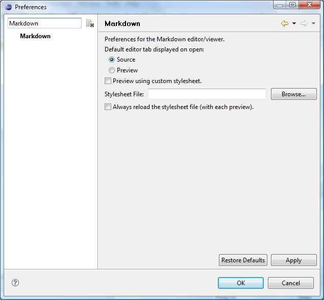

Apply CSS to Rendered Content
In the Preferences viewer, find the Markdown preference page, which will look as shown below

You may specify which page of the editor will display by default on opening. You can also specify
an external stylesheet to use when rendering the preview page and in the export of rendered
content. This stylesheet may either be cached upon first use or reloaded with each use in order
to facilitate active editing of both the markdown content and the stylesheet.